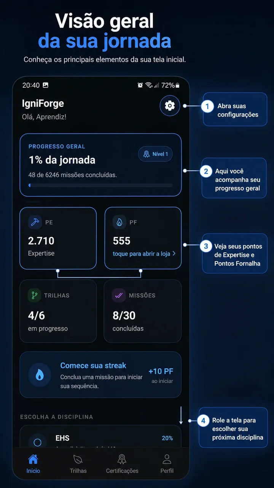
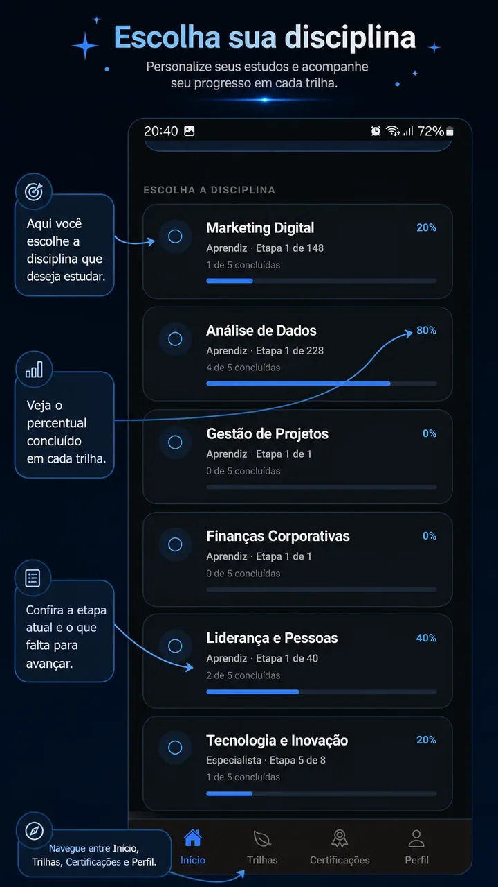
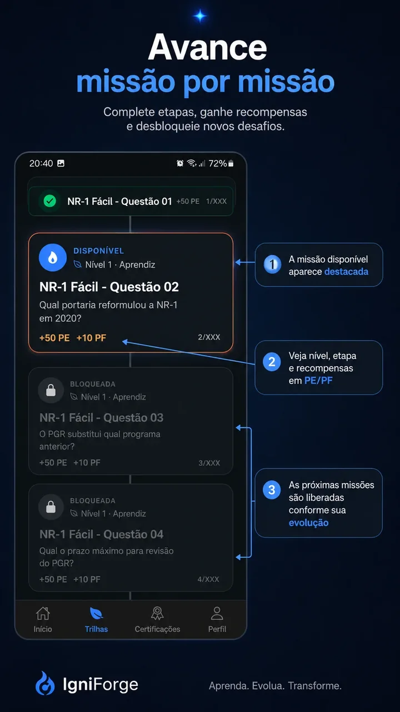
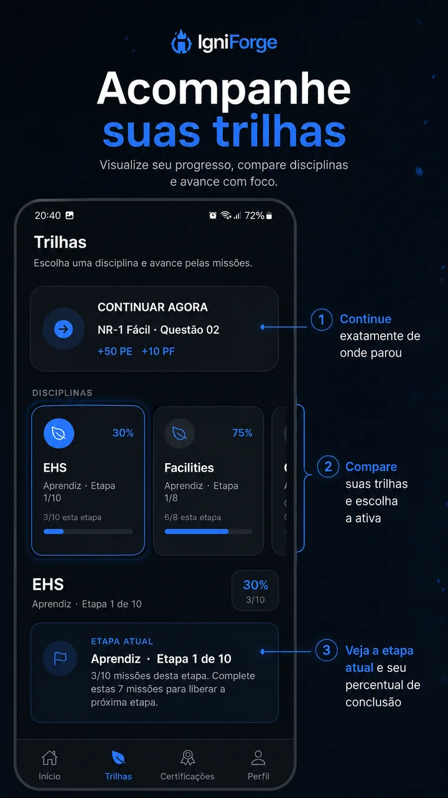

Treinamento corporativo difícil de engajar e medir
O projeto nasceu para tornar conteúdos técnicos mais acessíveis, recorrentes e rastreáveis, reduzindo a dependência de treinamentos extensos e processos manuais de acompanhamento.
Plataforma corporativa multiempresa de treinamento gamificado, criada para transformar conteúdos técnicos em jornadas mensuráveis de aprendizagem, progressão e certificação.
O PRODUTO
O projeto nasceu para tornar conteúdos técnicos mais acessíveis, recorrentes e rastreáveis, reduzindo a dependência de treinamentos extensos e processos manuais de acompanhamento.
Empresas organizam setores, disciplinas e missões; colaboradores treinam pelo aplicativo, evoluem por níveis, acumulam XP/PF, participam do ranking e concluem certificações.
ARQUITETURA
React Native + Expo para experiência do colaborador, com trilhas, missões, inventário, Loja, ranking e certificações.
React para gestão de empresas, setores, disciplinas, missões, usuários, notificações e regras corporativas.
Presença institucional do produto, fluxos de ajuda, termos, privacidade e apresentação da plataforma.
Auth, Firestore, Cloud Functions, Storage, App Check e regras server-side como autoridade para operações críticas.
SEGURANÇA
Chamadas críticas exigem identidade válida e atestação do aplicativo.
Admin atua em seu escopo; UltraAdmin possui governança global controlada.
Gabaritos não precisam ser entregues ao cliente antes da conclusão das missões e avaliações.
Operações de recompensa e administração são protegidas contra repetição e duplicidade.
Leitura e escrita são limitadas por identidade, perfil, empresa e finalidade do recurso.
Ações administrativas críticas possuem contexto, motivo e rastreabilidade operacional.
Migração controlada para separar dados de resposta da superfície pública das missões, preservando rollback durante o ciclo de segurança.
HOMOLOGAÇÃO REAL
A homologação gerou capturas reais das principais jornadas do aplicativo. A seleção pública abaixo utiliza apenas imagens revisadas, sem usuários, credenciais, e-mails ou dados corporativos sensíveis.
EVIDÊNCIAS DA ENTREGA
Apresentação institucional do produto disponível publicamente e integrada ao ecossistema da MV Gestão Integral.
Abrir site público ↗Painel administrativo homologado e publicado com autenticação, gestão corporativa e controles por perfil.
Abrir Admin ↗Missões, Loja, inventário, certificação, ranking, notificações, perfil e persistência validados em aparelho físico.
Gabaritos criados e verificados em migração controlada para separação da autoridade de correção server-side.
Capturas reais da interface do IgniForge utilizadas para apresentar a jornada do colaborador. Clique em qualquer imagem para visualizar em tamanho maior.

Progresso, Expertise, Pontos Fornalha, streak e acesso às principais áreas do treinamento.

O colaborador visualiza disciplinas disponíveis, percentual concluído e a etapa atual de cada jornada.

Missões são liberadas conforme a evolução, exibindo nível, etapa e recompensas em PE e PF.

A tela reúne a próxima missão, comparação entre trilhas e o que falta para avançar para a próxima etapa.
MINHA ATUAÇÃO
Definição e evolução da integração entre app, Admin, site e backend Firebase.
Implementação mobile/web, Functions, dados, integrações e fluxos corporativos.
Rules, App Check, autorização, isolamento multiempresa, idempotência e proteção de conteúdo.
Fluxos mobile e administrativos com foco em clareza, feedback e prevenção de erro.
Emuladores, regressões focadas, validações de Rules/Functions e runtime em Android físico.
Hosting, APK preview, ambiente real, documentação técnica e fechamento de entrega.